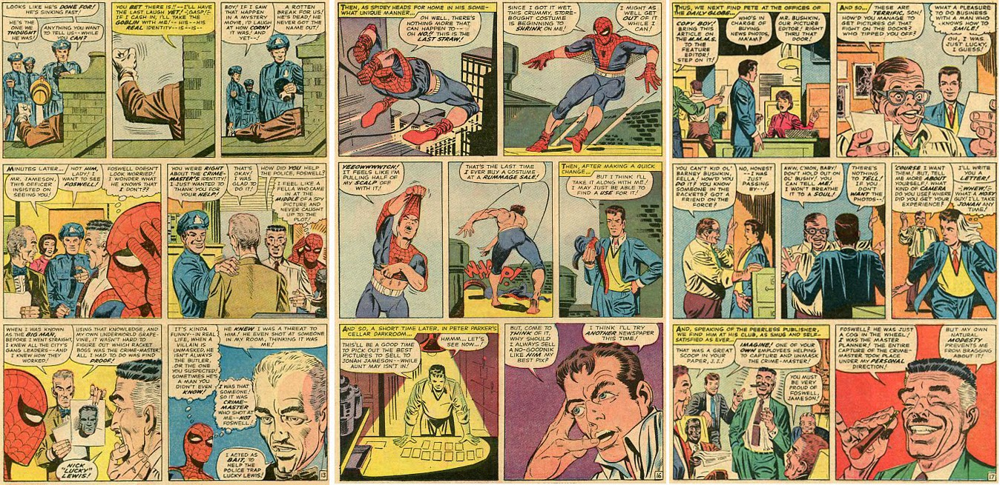

|  |
| A loses a valuable diamond, X * A loses a valuable diamond, X, in a place where there is a flock of chickens, and he insists that the chickens must be killed, one by one, until the diamond is found. The chickens are all killed ** A loses a valuable diamond, X, and has his suspicions as to where it can be found, but discovers that his suspicions are unfounded *** |